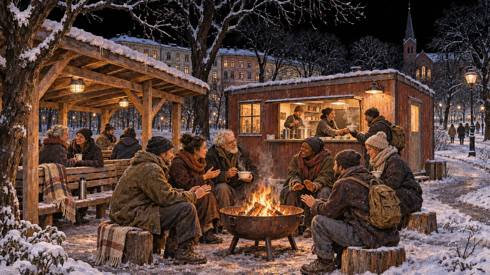

Sett ut bålpanner i Sofienbergparken nå
Oslo kommune må sette ut bålpanner, benker med tak og en varm brakke med et lite suppekjøkken i Sofienbergparken. Byens løse fugler trenger et sted å trekke sammen om vinteren. Et sted hvor varmen er gratis, og hvor ingen må kjøpe noe for å få bli.

Vi snakker gjerne om hvor levende byen blir når folk trekker ut om sommeren. Vi liker mylderet, samtalene, menneskene som blir sittende til solen går ned. Så kommer kulden, og vi går inn.
Men hvor går de som har fellesskapet sitt ute?
For dem er byen et tilfluktsrom også om vinteren. De møtes, holder av en plass, kjenner hverandres historier. De trekker sammen for å holde varmen. Det burde være en enkel sak for kommunen å bidra med litt mer av den.
En bålpanne. Ved som fylles på. Et tak over benken. Et sted å få en skål varm suppe og sette seg inn når kulden går gjennom klærne.
Dette må på plass i Sofienbergparken nå.
Det offentlige rom blir okkupert av kapitalen. Bord for bord, lokale for lokale blir oppholdet vårt gjort avhengig av omsetning. Vi kan gå gjennom byen uten å betale, men når vi skal stanse, sette oss, varme oss, begynner betingelsene. En kaffe først. Så kanskje en til. Koppen blir tom lenge før vi er ferdige med å være der.
Vi lar den stå foran oss.
Det er fortsatt en skvett igjen.
Koppen legitimerer oppholdet. Vi har gjennomført transaksjonen som gjør vår tilstedeværelse forståelig, og begynner snart å vurdere om kjøpet fortsatt dekker plassen vi opptar. Ingen trenger å be oss gå. Vi administrerer vår egen bortvisning.
Slik skrumper det sosiale rommet inn til transaksjoner. Behovet for selskap blir kjøpekraft, behovet for varme blir omsetning. Den som ikke kan betale, må fortsette å gå.
I parken finnes et annet samvær. Mennesker som møtes utenfor kapitalismens jernbur, uten at møtet behøver å produsere noe eller gi avkastning. De kommer fordi de kjenner noen der, fordi dagen er lang, fordi det er bedre å sitte sammen enn alene. En forteller den samme historien som i går. En annen protesterer på en detalj. Slik holder de både historien og hverandre ved like.
De løse fuglene har også sine faste steder.
Det ligger en egen form for tilhørighet i dette, en sosial kontinuitet som lett forsvinner når vi bare ser enkeltmennesker med enkeltbehov. Et menneske kan ha et sted å sove og likevel mangle et sted å være. Et tilbud på den andre siden av byen kan gi varme, men samtidig bryte forbindelsen til dem som gjør dagen levelig. Derfor betyr det noe hvor vi legger møteplassene. Varmen må også komme dit fellesskapet allerede finnes.
Vi må ta vare på dette livet i Sofienbergparken. Gi det ly og gjøre det mulig å fortsette gjennom vinteren.
Bålpanner kan samle folk rundt en varme som ingen eier alene. Benker med tak kan skjerme mot nedbør og gi et sted å bli sittende. En enkel, oppvarmet brakke med et lite suppekjøkken kan gi både mat og et rom å trekke inn i. Med toalett i nærheten, avfallshåndtering og mennesker som har ansvar for driften, kan dette bli en trygg møteplass for dem som bruker den og for parken omkring.
Kommunen må sørge for forsvarlig plassering, brannsikker drift og et fast ansvar for ved, renhold og åpning. Frivillige og brukerne selv kan være med, men kommunen må bære ansvaret for at møteplassen faktisk finnes og fungerer gjennom vinteren.
Tryggheten må bygges sammen med dem som skal være der. De kjenner stedet, vet hvem som kommer, og merker når noen mangler. Det er en kunnskap som sjelden får samme autoritet som et skjema, selv om den kan være langt mer presis.
Og vi må tåle at en fri møteplass rommer mennesker som ikke oppfører seg som kunder. Folk kan være slitne, høylytte, stille eller vanskelige å forstå. Det trengs grenser mot vold og trakassering, og noen som kan hjelpe når situasjoner låser seg. Et trygt sted må gi plass til menneskelig forskjellighet.
Vi nordmenn liker å fortelle at vi tåler kulden. Vi har klær til den, sko til den, hele små garderober med utstyr til å overvinne den. Så går vi hjem og lukker døren. Det er varmt hos oss. Vi har gjort det hyggelig.
Kommunen må også sørge for varme der døren mangler.
Sett ut bålpannene. Bygg tak over benkene. Få på plass brakken og suppekjøkkenet i Sofienbergparken.
La folk trekke sammen.
Denne vinteren.